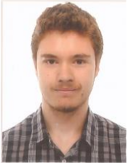

Conocmientos en:
| Datos personales |  |
|---|
| Nombre y Apellidos | Miguel Ángel Alba Blanco |
| Dirección: | Calle Hermanos Menéndez Nº1 (Madrid) |
| E-mail: | miguelangel.abb@gmail.com |
| Fecha y luegar de Nacimiento: | 4 de octubre de 1992 (Madrid) |
| GitHub |
| Formación Reglada |
|
|---|
| Formación Complementaria |
|
|---|
| Experiencia Laboral |
|
|---|
| Proyectos |
|
|---|